Node.js Web Chat Application
April 8, 2012
So I had come to a standstill on my primary project headcam.org, and I wanted to learn something new. I had the desire to learn about networking in the browser. While researching what might be a good way to go about this, I ran into Node.js. I thought this could be a great way to learn something new and improve my javascript a bit. Now, the problem was, what should I make. I decided a simple chat application would be the easiest, and I hope to share with you what I learned.
First let's look at how the project is set up
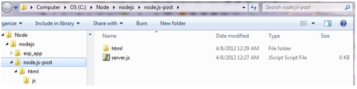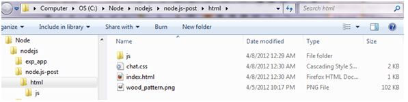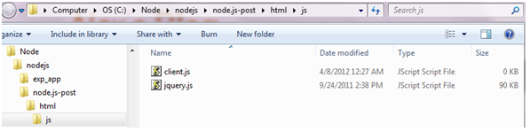
I'd like to not ethat this tutorial is only going to cover how to set up the server and set up the client code. You can download/view the html/css code on my Git page. Also, you will need the express framework module and the socket.io module.
Server.js
Alright, let's start with the server code. First we must require two modules - the express module and the socket.io module. We assign each of these to a variable. We create an instance of the HTTP Server and store it in the app variable. We then create an instance of the socket and have it listen to that server. Finally we set up the server to open up on a port. In this case I chose port 4000.
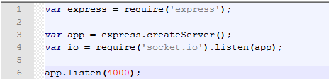
Next, we tell our server to use our static file with the 'express.static()' method. We should pass the directory of where our index.html file is located. In this case, we stored it in the html folder. After that we are going to go ahead and create an array to hold the users that connect to our server - however we won't use that for a while.
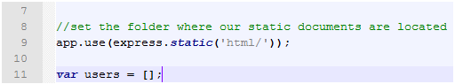
Now it's time to write our server-side callbacks. When these events are fired client-side, the server will execute these callbacks. First we need to write the function for when a connection occurs. Then I'm going to make a callback called 'join'. When 'join' occurs, we're going to do a few things. We will also require one parameter. That parameter will be the username of the person joining.
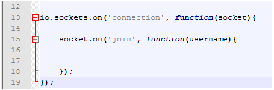
Within this 'join' callback, we are going to add the username to the users[] array. We are also going to add 2 more callback functions caleld 'display' and 'leave'.
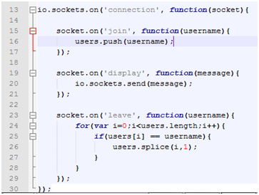
'display' is going to be a callback that just takes a message as a parameter and then sends that message to all users. 'leave' is a callback that is going to remove the user from the list of online users when they leave the chat room. For now, that will conclude our server.js file.
Client.js
First we are going to create a username variable and a function called join() which will fire after the user selects a username. As our page doesn't actually redirect, we must then use jquery to change what is being displayed.
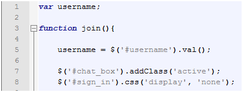
Next, we need to connect the client socket to the server socket. We use the io.connect() function for that. I should add that for this to work, we must add \< script src='/socket.io/socket.io.js'> into our html file. I'm not sure how exactly that works, but it does...
Now we need to start making some client events that will fire the serverside events. The first is going to be 'connect'. This is actually a bilt in socket.io event. The actions we put in here will occur upon joining the chat room. First we are going to call that 'join' function from the server and pass our username so it can be added to the 'online' list. We are then going to call the 'display' function and pass a message indicating that we joined the chat room. This will display to all users
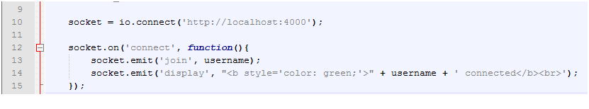
We are also going to add 3 more events. First we will add the 'message' event. This is also a socket.io event. This automatically displays messages, and this is what receives any '.send()' callbacks from teh server. WE are going to add that message to a div and then include the older messages, too. I'm also adding an 'update' event which will update the online list of users to the client. We are also creating a 'disconnect' event. In the event of a user disconnect, we will have a few things happen. Finally, we use some jQuery to handle sending a message and then invoke the server 'display' callback (which in turn fires the 'message' event client-side).
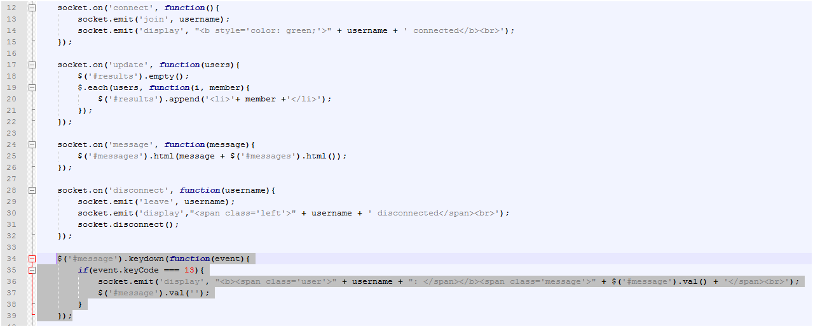
That's it for the join() function. We are also going to add a leave() function. Ideally the 'disconnect' event should do what this leave() function does; however, I had trouble sometimes firing the disconnect event. Anyway, anybody who knows why that doesnt work let me know. The leave function will look like this.
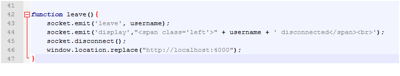
Lastly, we just need to add a few lines of code to our server file. We are going to add calls to the 'update' client event in 2 places.
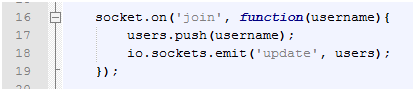
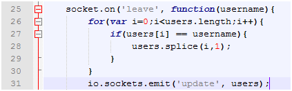
And that's it. Our application should be working.
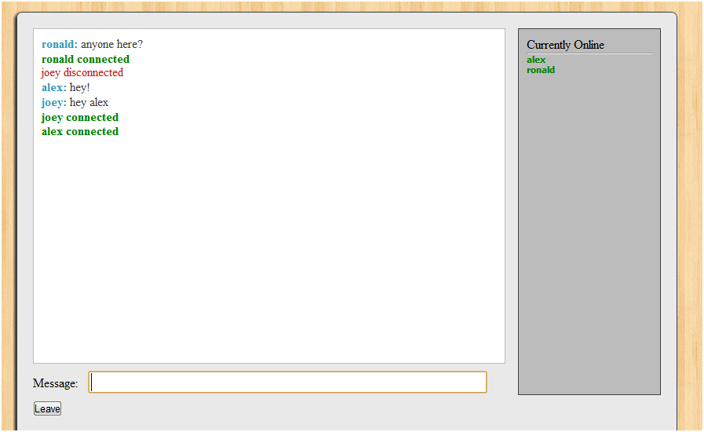